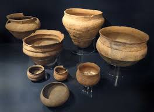
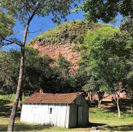
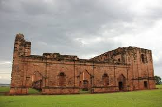
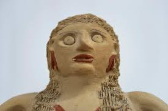
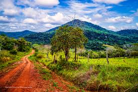

Trinidad

Ruinas Jesuíticas de Trinidad
Un complejo monumental del siglo XVII fundado por los jesuitas, con iglesias y plazas que muestran la fusión de arte barroco y tradición indígena.
Fecha estimada: 1706 d.C.Profundizando en los vestigios de las culturas guaraníes y jesuíticas que dejaron su huella en el territorio paraguayo.
Más información sobre el patrimonio arqueológico de Paraguay...
Un complejo monumental del siglo XVII fundado por los jesuitas, con iglesias y plazas que muestran la fusión de arte barroco y tradición indígena.
Fecha estimada: 1706 d.C.
Fragmentos decorados con diseños geométricos y zoomorfos que documentan las técnicas de alfarería precolombina paraguaya.
Fecha estimada: 1200 d.C. – 1600 d.C.
Restos de un poblado indígena con estructuras de cerámica y herramientas de piedra, revelando la vida cotidiana antes de la colonización.
Fecha estimada: 800 d.C. – 1500 d.C.
Parte del sistema jesuítico de reducciones, donde se establecieron comunidades indígenas para trabajo y educación religiosa.
Fecha estimada: 1685 d.C.
Objetos de alfarería clásica de los pueblos guaraníes, con motivos naturales y usos ceremoniales.
Fecha estimada: 1000 d.C. – 1600 d.C.
Un tramo de rutas antiguas utilizadas por las comunidades indígenas para el intercambio comercial y espiritual.
Uso continuado desde antes del siglo XV.